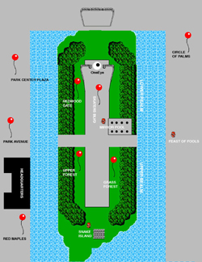

NEARLY 200 ARTISTS SELECTED TO PARTICIPATE IN ZeroOne San Jose Worldwide Search Also Results in a World Premiere, Two North American Premieres, 5 Artist Residencies and Multiple Commissioned Projects San Jose, CA. (April 24, 2006) – More than 1,700 artists from 53 cities around the globe submitted their work to an international jury to be included in the inaugural ZeroOne San Jose: A Global Festival of Art on the Edge held in conjunction with the prestigious 13th International Symposium on Electronic Art (ISEA2006). Today, selection was completed for the unprecedented event, with nearly 200 of the world's most innovative, contemporary artists chosen to launch seven days of art and interconnectivity, which takes place August 7-13 in downtown San Jose.
The exceptionally high number of submissions were reviewed by over 300 jury members from an international pool of contemporary art experts, artists, and theorists. Approximately 200 selected artists represent 152 unique projects and exhibits, all of which are original in concept and realization. Projects range from the large, such as Flying Tails by artists Katie Salen and Jenny Marketou, a live action street game that uses collective surveillance to explore public anthropology and hidden geographies, to the intimate, like J.D. Beltran's Secrets. The genres represented are diverse: traversing outdoor games to instant cinema to bio-art. The indoor exhibit occupies 80,000 square feet, and the entire city is a back-drop for many installations and over 35 interactive projects open to the public. The festival even features a fully functional interactive café, C4F3, with shape shifting walls and tables featuring hidden artworks. Presentation of the work in progress Lynn Hershman's new film, Strange Culture, a documentary feature film based on the recent experiences of Steve Kurtz, an Associate Professor of Art at the State University of Buffalo and a founding member of the internationally acclaimed Critical Art Ensemble. The two North American premieres include Peter Greenaway's new VJ project, Tulse Luper, which garnered rave reviews in Amsterdam during its March world premiere, and a special presentation by Ryoji Ikeda, whose C4I is both a concert and a film that uses data as its material and theme, highlighting the ways in which data shapes our understanding of the world. Other featured performances include Obie Award-winning performance company Builders Association and Digital Design Studio dbox in Super Vision, which probes three absorbing, intertwining, and all too-close-to-home stories drawn from the datasphere that explore the dangerous minefield of lives reduced to data, revealing a society in which "dataveillance" goes beyond anything Orwell ever imagined. An integral aspect of the Festival is the Residency program, which commissioned artists to create new work in cooperation with corporate, academic, cultural, or government sponsors based in or around Silicon Valley. Examples include Ben Hooker and Shona Kitchen's DataNature, a multi-site electronic artwork that reveals and celebrates the strange, secret beauty and interconnectedness of seemingly disparate natural and man-made aspects of Norman Y. Mineta San Jose International Airport and its environs. The public will be invited to push a button on the DataNature "ticket machine" to receive a souvenir ticket. The dispensed ticket will superficially have the look and feel of a flight ticket/boarding card, but on closer inspection it features a montage of live and pre-collected images and stories from the Airport and its environs. Each ticket will be dynamically and uniquely created. The artwork is located both outside the domestic arrivals terminal at the Airport and at the intersection of the Paseo San Antonio at Market St. The intent of the dual locations is to reinforce the connection between the Airport, as one of the major gateways to the ZeroOne San Jose Festival event, and Downtown. Another featured residency is Skatesonic by artist Cobi Von Tonder, whose residency is in collaboration with, and being built at, IDEO Labs. Skatesonic taps into skateboard culture, using the motions and sounds of skateboards to create music. In a way, each move translates to musical parameters and the rider ends up skating through a landscape of music (which s/he influences over time). Response to the call for entries for ZeroOne San Jose was unparalleled. Artists' work, ranging from film screenings, concerts, and dances to interactive exhibitions, paintings, performances and more, answered the call for projects in five categories: Interactive City, reflecting the surprising ways the city can interconnect with immediately apparent, or not so obvious, artworks embedded throughout the city and the festival; Community Domain, providing direct participation for community members in advance of the festival as well as exploring issues such as the environmental factors and natural demographics affecting communal experience; Pacific Rim revealing the new cultural laboratory of experience coming out of Pacific Asia where the economics, politics, and mobility of the last 25 years are changing art and culture; Transvergence category for artists to explore where fields converge and transcend; and finally the category of Edgy Products taking a look into the creations of the future stemming from the new uses of art and technology. "The team of international jurists looked for the most unique and innovative art projects existing on the planet, and we found them,” said Festival Director Steve Dietz. “This is a festival unlike any other that has taken place in North America. Prepare to be astounded." About ZeroOne San Jose: A Global Festival of Art on the Edge ZeroOne San Jose: A Global Festival of Art on the Edge is an innovative, ground-breaking biennial art festival in the Silicon Valley designed to show exhibits, performances, workshops, and events that have been created using the newest developments in contemporary art practice. The festival's themed projects examine and reflect issues and experiences of everyday life. Artistic and revolutionary digital culture elements are woven throughout. A serious art event, ZeroOne San Jose: A Global Festival of Art on the Edge provides academics, artists, and technology enthusiasts an inside look at new territories in creative imagination and inventiveness. However, the event is also designed with facets of learning, play, and virtual technology that make it an enjoyable experience for families, students, teens, underground culture enthusiasts, and explorers of new millennium digital culture alike. The inaugural ZeroOne San Jose: A Global Festival of Art on the Edge takes place in 2006 in conjunction with the ISEA2006 Symposium. With a record number of artistic submissions from around the world, festival and symposium attendees have the opportunity to make live contact with the most distinctive, astonishing and startling contemporary art of the new millennium. The festival will take place throughout downtown San Jose from August 7-13, 2006. For more information, visit http://01SJ.org. About ZeroOne San Jose and the San Jose Museum of Art As one of the gateway sites for ZeroOne San Jose, the San Jose Museum of Art will transform its new wing galleries into a showcase for digital art. Nine large-screen projections and interactive works by internationally acclaimed L.A. artist Jennifer Steinkamp await visitors to the Museum's first floor galleries. Upstairs, Edge Conditions, an exhibition curated by Steve Dietz will highlight some of the most exciting and challenging contemporary art being created today including the crown jewel of this show and the Museum's newest acquisition, Listening Post, a dynamic piece consisting of 231 mini-LCD screens that constantly cull live information from the Internet. Created in a unique collaboration between artist Ben Rubin and statistician Mark Hansen, Listening Post has been hailed as a seminal piece of electronic art. The San Jose Museum of Art is also host to the festival's grand central meeting point – the C4F3 Interactive Café. For more information, visit http://www.sjmusart.org Artists selected to participate in ZeroOne San Jose this year include: Masayuki Akamatsu | Saul Albert | Amy Alexander| Franck Ancel | | Goran Andrejin | Mauricio Arango | Kate Armstrong | Linda Arnejo | Jesse Arnold | James Auger | Douglas Bagnall | Shawn Bailey | Vedat Emre Balik | JD Beltran | Andy Bichlbaum | Matthew Biederman | Xu Bing | Rachel Bishop | Julian Bleecker | Marc Böhlen | Steve Bradley | Johnathan Brilliant | Jim Campbell | Jonah Brucker-Cohen | Jon Brumit | Builders Association / dbox| Stephen Bull | C5 | Jim Campbell | Carlos Castellanos | Adrian Cheok | Shu Lea Cheang | Ty Choi | Ian Clothier | Georgina Corzine | CPR (Christiane Robbins) | Jill Coffin | Alison Craighead | Peter d'Agostino | Beatriz Da Costa | Sharon Daniel | Xing DanWen | Paul DeMarinis | Diego Diaz | Jenna Didier | Chris Dierks | Craig Dietrich | Ricardo Dominguez | Judith Donath | Josephine Dorado | Steve Durie | Laura Escude | Takehito Etani | etoy | John Evans | Marc Fournel | Amy Franceschini | Jenny Fraser | Free Soil | Eyal Fried | Ken Furudate | Guillermo Galindo | Benjamin Gaulon | Victor Gentile | Michelle Glaser | Glowlab | Ken Goldberg |Gorbet Design, Inc.| Scot Gresham-Lancaster | Ingo Gunther | Shilpa Gupta | Ian Gwilt | Kenneth Haller | Heiko Hansen | Katsuhiko Harada | Elizabeth Haselwood | Yosuke Hayashi | Taraneh Hemami | Drew Hemment | Lynn Hershman-Leeson | Oliver Hess | Norimichi Hirakawa | Tad Hirsch | Rania Ho | Ben Hooker | Rikayo Horimizu | Mark David Hosale | Theo Humphries | Adam Hyde | Katherine Isbister | Colin Ives | Anab Jain | Chip Jansen | Adriene Jenik | Natalie Jeremijenko | Jin Jiangbo | Hu Jieming | Ping Jin | Daniel Jolliffe | Crispin Jones | Zita Joyce | Meier Jürgen | Mauri Kaipainen | Kanarinka | Andruid Kerne | Omar Khan | Osman Khan | Olga Kisseleva | Shona Kitchen | John Klima | Germaine Koh | Bobbi Kozinuk | Heidi Kumao | George Legrady | Kok-Chian Leong | M. Simon Levin | Derek Lomas | Laurie Long | Ludica | Diane Ludin | Dale MacDonald| Nathalie Magnan | Angela Main | John Mallia | Jeff Mann | Jenny Marketou | Caitlin Masley | Benoit Maubrey | Caroline McCaw | Damon McCormick | Shawn Micallef | Ethan Miller | Hu Jie Ming | Jonathan Minard | Scott Minneman | Andrea Moed | Jin-Yo Mok | Lee Montgomery | James Morgan | Katherine Moriwaki | Michael Mosher | Anna Munster | Antoni Muntadas | Andrew Murphie | Julie Newdoll | Nhan Nguyen | Greg Niemeyer | Nancy Nowacek | NPR | Shosei Oishi | Kentaro Okuda | Will Pappenheimer | Nam June Paik | Jim Pallas | Leonard Paul | Mark Pauline |Marko Pelijhan | Mark Pesce | Martin Pichlmair | Manuel Piña | Esther Polak | Mika Raento | Rachael Rakena | Raqs Media Collective | Alan Rath | Christina Ray | Joe Reinsel | Christiane Robbins | Matt Roberts | Natalie Robertson | Jean Routhier | James Rouvelle | Katie Salen | Kazuki Saita | Alyce Santoro | Sean Savage | Gabe Sawhney | Michael Schneider | Ana Serrano | Hector Serrano | Mark Shepard | Hunag Shi | Oishi Shosei | Aaron Siegel | Shirley Soh | Adam Somlai-Fischer | Karolina Sobecka | Douglas Edric Stanley | Jennifer Steinkamp | Jack Stenner | Rainey Straus | Ashok Sukumaran | Tiffany Sum | Margaret Tan | John Taylor | Michelle Teran | Luther Thie | Tamiko Thiel | Thomson & Craighead | Jessica Thompson | John Thompson | Pia Tikka | Vladimir Todorovic | John Tonkin | Noam Toran | Clara Boj Tovar | Michael Trigilio | Marc Tuters | Robert Twomey | Paul Vanouse | Cobi van Tonder | Gustavo Vazquez | Victor Vina | Rasmus Vuori | Lee Walton | Annie On Ni Wan | Patrizia Washer| Stewart Washer | Tomoya Watanabe | Paul Watt | Mike Weisert | Michael Wienkove | Gail Wight | Jennifer Willet | Yauger Williams | Jon Winet | Fabian Winkler | Ami Wolf | Marina Zurkow For further media information, please contact:
Hawkins Public Relations; 4640 Admiralty Way, Suite 500, Marina Del Rey, California 90292
tel: 310-496-5858/fax: 310-496-5701
Downloads Artist Selection.pdf |